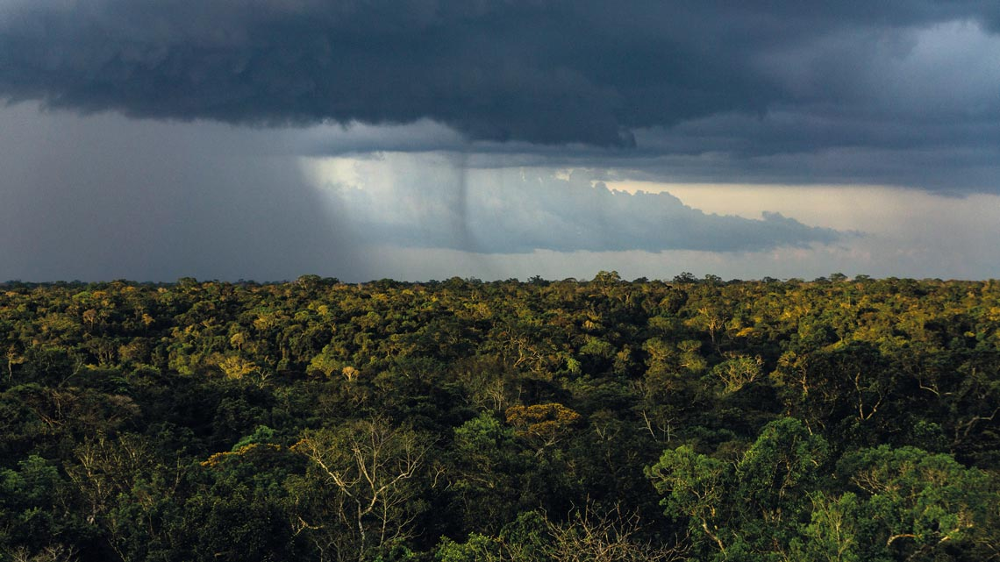
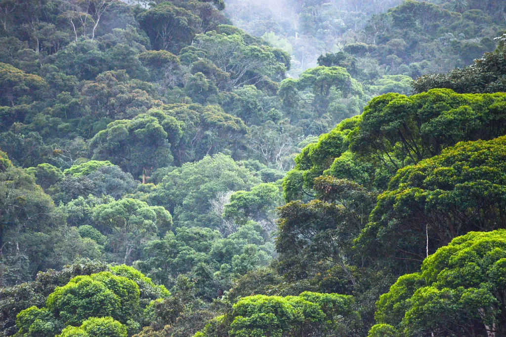
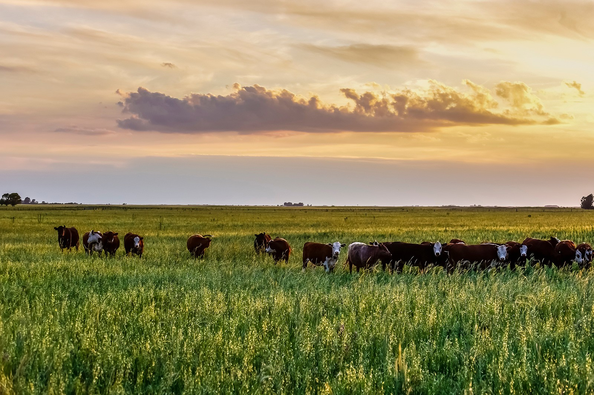
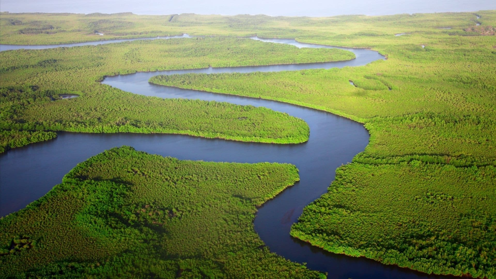
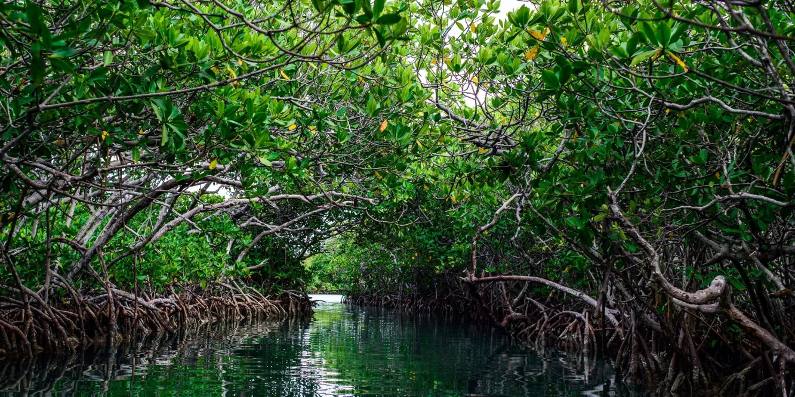

Amazônia
Descrição
A Amazônia é formada por diversos ecossistemas e é a região com maior biodiversidade do planeta. Além de abrigar grandes reservas minerais e um terço das florestas tropicais úmidas do mundo, a Amazônia é crucial para a regulação do clima global.
Mata Atlântica
Descrição
A Mata Atlântica corresponde a 15% do território brasileiro, abrigando uma rica diversidade. Atualmente, apenas 7% de sua vegetação original permanece, o que a torna uma das áreas mais ameaçadas do Brasil.
Cerrado
Descrição
O Cerrado é o segundo maior bioma da América do Sul e abrange cerca de 22% do território brasileiro. Conhecido por suas savanas e planícies, o Cerrado abriga diversas espécies adaptadas às condições de seca e fogo.

Pampa
Descrição
O Pampa está restrito ao estado do Rio Grande do Sul e é um dos biomas mais antigos do país. Ocupa 63% do território estadual e é caracterizado por vastas áreas de pastagens e vegetação típica das regiões temperadas.
Pantanal
Descrição
O Pantanal é uma das maiores extensões úmidas contínuas do planeta, ocupando 1,76% do território brasileiro. É conhecido por sua grande riqueza em fauna e flora, além de ser um importante regulador climático da região.
Manguezal
Descrição
Os manguezais são ecossistemas costeiros que ocorrem em regiões tropicais e subtropicais. São importantes para a reprodução de várias espécies de peixes e outros organismos marinhos.
